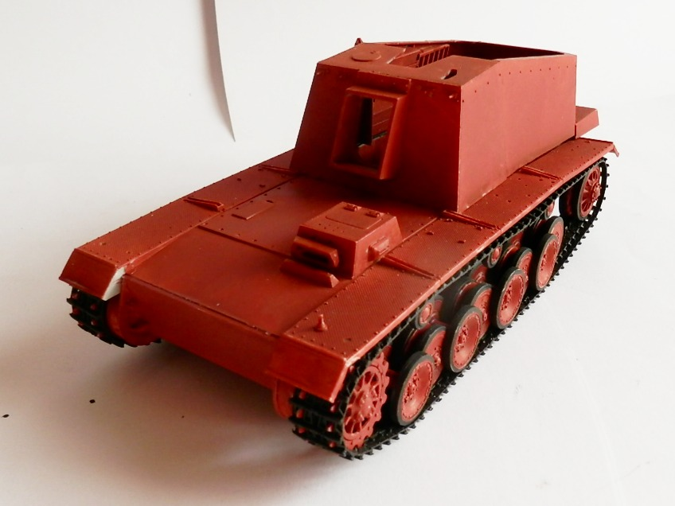
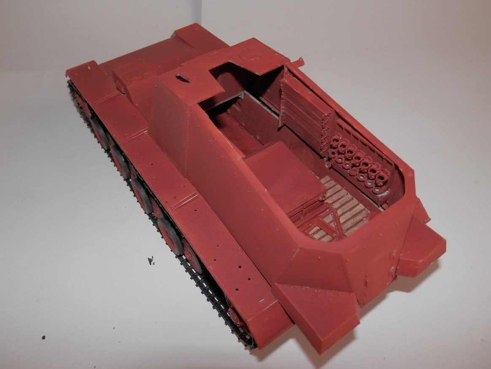
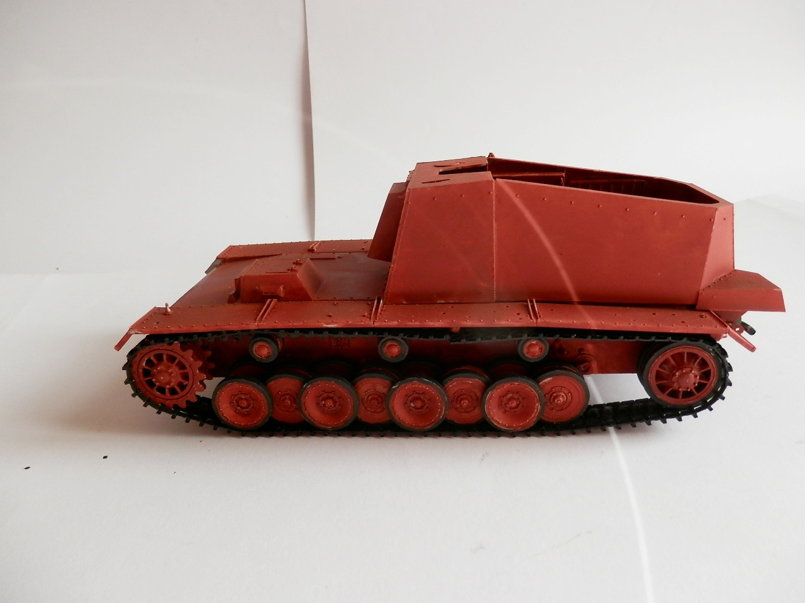
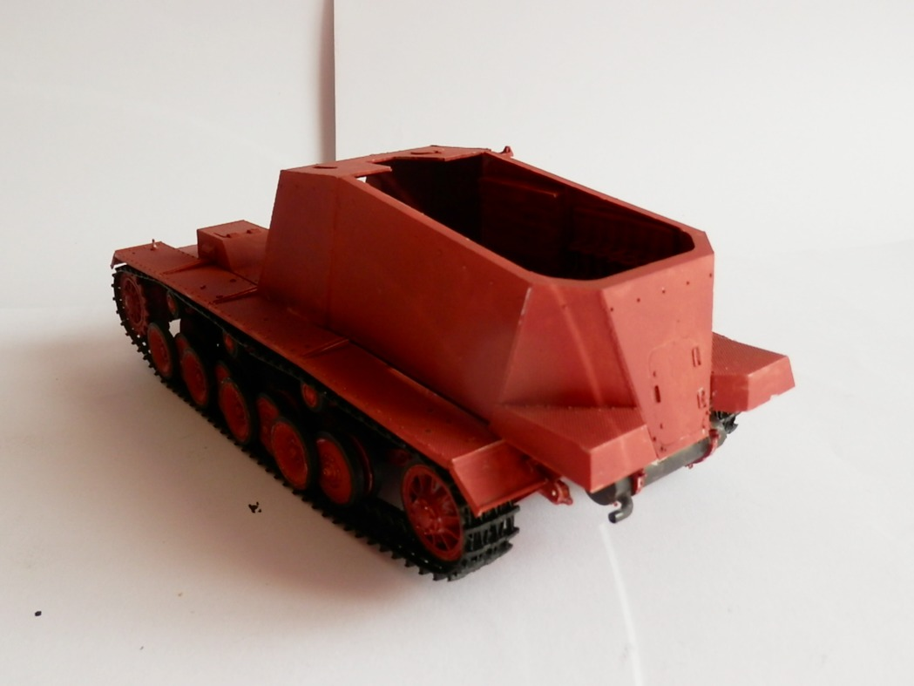
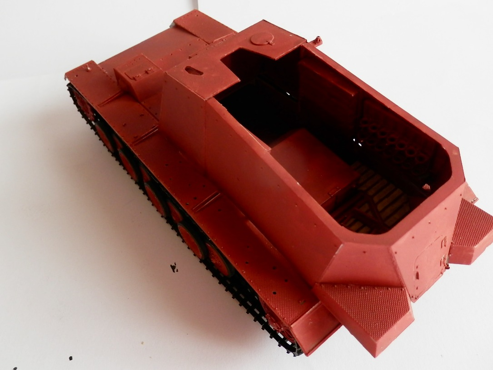

Mezzi militari · scale model archive
Hull of Panzerselbstfahrlafette für 12,8-cm-Kanone 40
Hull of Panzerselbstfahrlafette für 12,8-cm-Kanone 40 — Kit: Trumpeter, Scale: 1/35. Representing the Sturer Emil hull under construction as I used the…

Photo gallery




English description
Representing the Sturer Emil hull under construction as I used the gun for another project, i,e, the 12.8 Waffenträger auf Pz IV from World of Tanks,
Descrizione italiana
Rappresenta lo scafo dello Sturer Emil in costruzione, dato che ho usato il cannone per un altro progetto, cioè il 12.8 Waffenträger auf Pz IV da World of Tanks.